Lucidi C++ 2022
Prof. Fabrizio Sacco
(C++ per programmatori C)
| B. Stroustrup (AT&T) - Inventore del C++ - https://www.stroustrup.com/ |
Nascita del linguaggio 
Anni 80: si aggiunsero caratteristiche nuove al C
I primi compilatori C++ erano dei traduttori da C++ a C
Il C++ oggi contiene tutti gli elementi del C ANSI
Risorse on line:
| Download C/C++ Compiler (Codeblocks/DevCpp Mingw 9) (versione F. Sacco, con WinBgim, SFML, etc. ) |
|---|
| On Line C++ Compiler |
| Tutorial Completo C++ |
Primo programma in C++ 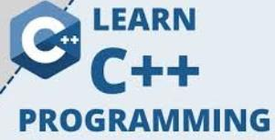
/* Primo programma scritto in C! */// OnLineCompiler:[https://www.onlinegdb.com/online_c_compiler/]int main(){ printf("Ciao mondo\n"); return 0;}Lo stesso in C++
// OnLineCompiler:[https://codeboard.io/projects/302542]using namespace std;int main(){ cout << "Ciao mondo" << endl; return 0;}ALCUNI PUNTI DI FORZA DEL C++
1. Stretto controllo sui tipi
2. Migliorato l'I/O standard
3. Overload operatori e funzioni
4. Riferimenti
5. Programmazione ad oggetti (Oggetti, ereditarietà completa, template)
6. Semplicità ed uniformità (anche nel riutilizzo del proprio codice, classi di oggetti standard)
7. Completa compatibilità dei moduli già scritti in C
8. Disponibilità in tutti gli ambienti di sviluppo (Win, Linux, Unix, Mac, Etc.)
Introduzione all'I/O in C++
/* Ecco un esempio di I/O in C */
include <stdio.h> // OnLineCompiler:[https://www.onlinegdb.com/online_c_compiler/]int main(){ int i; long l; printf(" Due numeri .."); scanf("%d",&i); scanf("%ld",&i); printf("Numeri: %d %ld",i,l); return 0;}// Lo stesso in C++
// OnLineCompiler:[https://codeboard.io/projects/302631]using namespace std;
int main(){ int i; long l; cout << " Due numeri .."; cin >> i; cin >> l; cout << "Numeri: " << i << " " << l; return 0;}// NB: << e >> sono operatori di flusso, cin, cout (e cerr) sono oggetti// che rappresentano input, output ed error standard// Ancora un Esempio di I/O: Tabellina
// OnLineCompiler:[https://codeboard.io/projects/302632]using namespace std;
int main(void){ int tabel;
cout << "Tabellina del.."; cin >> tabel; for(int cont = 0; cont <= 10; cont++) cout << tabel << " per " << cont << " fa " << cont * tabel << "\n"; return 0;}Esercizi I/O
1) Calcolare la somma e la media di n numeri letti dall'input standard
2) Calcolare il massimo e il minimo fra n numeri letti dall'input standard
3) Riempire un vettore di numeri letti da input e ordinare il vettore (bubble sort) e poi visualizzare il vettore ordinato
// Aiuto Bubble Sort (variante):
for(i=0; i< elementi-1; i++) for(j=i+1; j < elementi; j++) if (v[i]>v[j]) //scambia i due elementi
OPERATORE :: E CAST
Cast e operatore di risoluzione ambito d'azione
// Un programma ... da dimenticare!!!
using namespace std;
const int PER_RIGA = 5;int i = PER_RIGA;
int main(){ for ( int i = 160; i < 255; i++) { cout << i << " --> " << char(i) << " "; if (::i-- == 1 ) // Che fa???? ::i = PER_RIGA, cout << "\n"; // Che fa??? } return 0;}
NB:
:: è l'operatore di risoluzione ambito d'azione
tipo(n) è un cast, come (tipo) n, quest'ultimo unico accettato in C
FORMATTAZIONE CON I MANIPOLATORI
// Manipolatori a base numerica
// OnLineCompiler:[https://codeboard.io/projects/302633]using namespace std;
int main(){ int a; cout << "Dammi un numero ..."; cin >> a; cout << "In esad. " <<hex<<a<<endl; cout << "In ott. " <<oct<<a<<endl; cout << "in dec. " <<dec<<a<<endl; return 0;}
// NB: La base impostata resta attiva //(fino al cambio)// I manipolatori hex, oct, dec valgono anche per l'input con cin
Esercizio: scrivere un programma di conversione numeri da base 8, 10, 16 a base 8, 10, 16.
PS: esiste anche la possibilità di usare bitset per ottenere numeri in binario
xxxxxxxxxx// OnLineCompiler:[https://codeboard.io/projects/302640]using namespace std;int main(){ int a=126; bitset<8> x(a); cout << "Binario (8 bit)= "<< x << '\n'; bitset<16> y(a); cout << "Binario (16 bit)=" << y << '\n'; return 0;}Manipolatori di controllo del formato setw() e setprecision()
xxxxxxxxxx// OnLineCompiler:[https://codeboard.io/projects/302641]using namespace std;int main(){ int a = 3, b = 4, c = 5;
cout << a << b << c << '\n'; cout << setw(5) << a << setw(5) << b << setw(5) << c << '\n'; cout << "CIAO\n"; cout << setw(40) << "CIAO\n"; // setw() non ha memoria! double f =1.123456789; // esempio di setprecision cout << " 5->" << setprecision(5) << f << '\n'; cout << " 8->" << setprecision(8) << f << '\n'; cout << " 3->" << setprecision(3) << f << '\n'; cout << "10->" << setprecision(10) << f << '\n'; return 0;}NB: Notate che setprecision() mantiene memoria, mentre setw() no.
I manipolatori: setiosflags()
(c'è anche resetiosflags())
xxxxxxxxxx// OnLineCompiler:[https://codeboard.io/projects/302642]using namespace std;
int main(){ int i = 193; float x = 75.92; // Allineo a sinistra e poi a destra cout<<setw(20)<<setiosflags(ios::left) <<i<<'\n'; cout<<setw(20)<<setiosflags(ios::right)<<i<<'\n'; // Stampa in notazione scientifica (L'allineamento e' ancora attivo!) cout<<setiosflags(ios::scientific)<<x<<'\n'; return 0;}
Obbligatorietà del prototipo:
xxxxxxxxxx// Programma In C, salvato in .c oppure in .cpp
// OnLineCompiler:[https://codeboard.io/projects/302643]// prova a togliere questa linea
int main(){ char s[40]; int l; strcpy(s,"ciao"); l = strlen(s); printf("l = %d, s = %s",l,s); return 0;}
NB: Il programma, salvato come .c e compilato come programma C funziona anche senza i prototipi (appaiono solo warnings): provate a togliere o a commentare gli #include
Invece in C++ la mancanza dei prototipi (definiti negli header, o file .h) o la loro incompletezza NON viene accettata
Prova a salvare il programma in un file .cpp e compila: già alla strcpy il compilatore C++ segnala errore!!!
I riferimenti: nomi alternativi per valori e variabili
xxxxxxxxxx// Codice C (funziona comunque anche in C++)
void scambia1(int *p, int *q) // Passaggio per indirizzo (OK in C e in C++){ int dep = *p; *p = *q; *q = dep;}
xxxxxxxxxx// Codice C++ (funziona SOLO in C++)
void scambia2(int &a, int &b) //Passaggio per riferimento (OK solo in C++){ int dep = a; a = b; b = dep;}
xxxxxxxxxxint main() // Compilare in C++, aggiungi header e cstdio [https://codeboard.io/projects/302649]{ int a = 7, b = 5;
scambia1(&a,&b); // Alla C printf(" a = %d, b = %d\n",a,b);
scambia2(a,b); // Alla C++ printf(" a = %d, b = %d\n",a,b); return 0;}
Allocazione della memoria (Array)
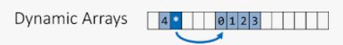
Si possono usare ancora malloc() e free(), ma il C++ provvede due nuove funzioni: new() e delete()
xxxxxxxxxx// OnLineCompiler:[https://codeboard.io/projects/302651]// Header X new/delete//vecchia stdlib.h per exit() in fine_memoria()using namespace std;
void fine_memoria() // se la new dovesse fallire, verrebbe attivata{ cout << "FINE MEMORIA "; exit(0); // Termina programma }
int main(){ int *v; // In C++ abbiamo anche la classe vector della STL. // Comunque qui creiamo un vettore "puro" che si // adatta alla dimensione desiderata long i,n; set_new_handler(fine_memoria); cout << "Quanti numeri interi ?"; cin >> n; // Meglio controllare che n >= 1!!! v = new int[n]; // Alloco memoria, a tutti gli effetti v // diventa un vettore di n elementi! // in C si fa: v = (int*) malloc(n*sizeof(int)); for ( i = 0; i < n; i++) v[i] = i; // Riempio in qualche modo il vettore v[] for (i = --n; i >=0; i--) cout << setw(7) << v[i]; // Visualizzo il vettore v[] delete [] v; // Libero memoria, v ritorna ad essere solo un puntatore // in C c'era: free(v); return 0;}Allocazione memoria e lettura file
Si supponga di caricare dati (in questo caso numeri interi) da file di testo. Dato un file di testo nella seguente forma (NB: il primo valore rappresenta il numero di elementi nel file, in questo caso il 10)
xxxxxxxxxx105176-2581517-91
Si desidera caricare in memoria in un array il file. In C avremmo usato funzioni come fopen, fscanf, fclose... In C++ possiamo fare così:
xxxxxxxxxx// OnLineCompiler:[https://codeboard.io/projects/302654]// per ifstream/ofstream// ifstream=apertura in lettura, ofstream=apertura in scritturausing namespace std;
int main() { int n; // numero elementi del file int *v; // pointer usato come vettore dinamico ifstream fd("numeri.txt"); // Apertura del file in lettura fd >> n; // lettura da file del numero di elementi // Nota che la sintassi e' praticamente la stessa della lettura // da input standard, cioè cin >> n; v = new int[n]; // Alloco memoria, v diventa un vettore di n elementi! for(int i = 0; i < n; i++) fd >> v[i]; // Lettura degli n elementi del file for(int i = n-1; i >= 0; i--) cout << v[i] << endl; // li visualizzo in ordine inverso delete [] v; // Libero memoria return 0;}/*** Esercizio:Modificare il programma qui sopra in modo che1) Legga i numeri dal qualsiasi file, chiedendo il nome del file2) Ordini il vettore3) Salvi il vettore ordinato nel file "numeri_in_ordine.txt" ( usare ofstream() ) 4) Salvi il vettore ordinato in una tabella html (file .html)***/
Approfondimento sui file, file CSV
I file CSV costituiscono un ottimo formato per scambiare i dati fra foglio elettronico (Libreoffice, Excel, etc.) e programmi scitti in C++
Supponiamo di avere un foglio elettronico di nome studenti contenente un certo numero di informazioni di iscritti ad un certo corso, come qui sotto:

Ogni record (linea) contiene, oltre al cognome e nome dello studente, il sesso (M/F), la provincia di residenza, il numero di esami svolti (Colonna E) e il voto medio degli esami sostenuti (Colonna F)
Per rendere questi dati visibili facilmente ad un programma C++ possiamo esportarli, da foglio elettronico, nel formato testuale CSV (ogni dato è separato da una virgola)
File studenti.csv:
xxxxxxxxxxALLORIO,GIANMARIA,M,TO,5,24AMERIO,DOMENICA,F,AL,6,29ANFOSSI,DOMENICO,M,PV,13,29BARBIERI,LAURA,F,NO,11,25BARBIERI,ROSSANA,F,TO,9,18BARLETTA,ELISABETTA GIOVANNA,F,NO,14,18BASILICO,TERESA,F,AT,4,29BERTINATO,ANDREA,M,CN,8,19BOJERI,ANTONELLA,F,CN,9,23
Ora carico in memoria in un vettore di struct studente il file studenti.csv. Nota l'utilizzo della funzione C++ getline()
xxxxxxxxxx// OnLineCompiler:[https://codeboard.io/projects/302655]using namespace std;
// Massimo numero linee file studenti.csv// Max lunghezza stringa
struct Studente{ char cognome[LMAX+1]; char nome[LMAX+1]; char sesso[2+2]; char provincia[1+3]; int n_esami; int media;};
Studente vetts[MAX]; // Vettore di studenti
const char *descrizioni[]= { "Cognome\t","Nome\t","Sesso\t","Provincia","N. esami","Voto medio",NULL};
void fatalerror(const char errore[]) // errore apertura file{ cout << errore; exit(1);}
int leggi(){ char campo[LMAX+1]; int nstud=0; // numeri di studenti Studente st; // appoggio ifstream fd("studenti.csv"); // dichiarazione e apertura in scrittura if (!fd.is_open()) // se il file non si e' aperto fatalerror("Errore apertura file in lettura"); while(fd.getline(campo, LMAX, ',')) // pesco prox campo { strcpy(st.cognome,campo); // Copio in cognome fd.getline(campo,LMAX,','); // pesco prox campo strcpy(st.nome,campo); // copio in nome fd.getline(campo, 3,','); // pesco prox campo strcpy(st.sesso,campo); fd.getline(campo, 3,','); strcpy(st.provincia,campo); fd.getline(campo,LMAX,',' ); // pesco numero esami st.n_esami=atoi(campo); // converto in int fd.getline(campo,LMAX,'\n'); st.media=atoi(campo); vetts[nstud++]=st; // aggiungo struttura sttruttura nel vettore } fd.close(); return nstud; // se serve, numero di studenti letti }
void visualizza(Studente st, int numero){ cout << "Studente N." << numero +1 << endl; cout << "Cognome: " << st.cognome << endl; cout << "Nome: " << st.nome << endl; cout << "Sesso: " << st.sesso << endl; cout << "Provincia: " << st.provincia << endl; cout << "Esami: " << st.n_esami << endl; cout << "V. medio: " << st.media << endl; cout << "-----------------------------------\n";}
int main(){ int studenti=leggi(); for(int i=0; i < studenti; i++) visualizza(vetts[i],i); return 0;}
/*** Esercizi:/// 1) Ordinare il vettore di studenti in base ad un campo scelto Aiuto (esempio campo esami):
#include <algorithm> ..... bool compara_esami(studente s1, studente s2){ //ordino per esami return s1.n_esami > s2.n_esami; }
sort(vetts, vetts+nstud, compara_esami); // ordinamento per esami
/// 2) Visualizzare a video il file ordinato/// 3) Salvare il file ordinato in un file csv /// 4) Salvare il file ordinato in un file HTML (con tabella)
Allocazione della memoria (Matrici)
Proprio come un puntatore può trasformarsi in un vettore, allocando lo spazio:
xxxxxxxxxxint *v = new int[dimensione];(dove dimensione è un intero che specifica la dimensione del vettore dinamico)...
...è possibile anche utilizzare un doppio pointer per definire una matrice (array bidimensionale) dinamica partendo da, ad esempio, da un doppio pointer ad interi:
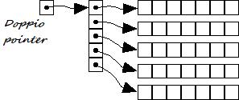
xxxxxxxxxxint **a; /* a==doppio puntatore ad intero: diventerà una matrice di qualunque dimensione (row,col) voluta */Puoi inizializzarlo...
(immaginiamo row==numero di righe, col==numero di colonne della matrice che desidero creare) usando un ciclo, in questo modo:
xxxxxxxxxxa = new int*[row];for(int i = 0; i < row; ++i) a[i] = new int[col];Matrici dinamiche, continua
Se, ad esempio, avessimo col= 5 e row = 4, produrrebbe una matrice come visualizzato qui sotto:

Non dimenticare di deallocare poi, quando la matrice non serve più, lo spazio in memoria utilizzato; occorre prima deallocare ogni riga separatamente con un ciclo prima di eliminare l'array di puntatori a:
xxxxxxxxxxfor(int i = 0; i < row; ++i) delete [] a[i]; // prima elimino le righe, // deallocando i puntatori alle linee...delete [] a; // ... e poi il doppio pointerxxxxxxxxxxEsercizio:Dato un file di nome "matrice.txt", in cui in prima linea sono indicate le dimensioni(righe e colonne) della matrice di interi, caricare in memoria la matrice in un costruttodi tipo: int **matrice;------------------------------------Segue esempio di file "matrice.txt":3 410 22 17 11-4 0 5 872 5 11 -5
Overload di funzioni
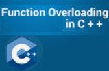
Un esempio: Come fornire l'istruzione accept (in Cobol legge tipi diversi) in C++?

Un modo semplice, utilizzando l'overload di funzioni, è:
xxxxxxxxxx// OnLineCompiler:[https://codeboard.io/projects/302660]using namespace std;
void accept(char *s, int lun) // lettura linea da standard input{ char c; while(cin.get(c) && c != '\n' && --lun) *s++ = c; *s = '\0';}void accept(int &n) // passaggio x riferimento{ const int LUN=40; char s[LUN+1]; accept(s,LUN); n = atoi(s); // atoi è in stdlib.h}void accept(int v[], const int lun){ for (int i = 0; i < lun; i++) accept(v[i]);}Esercizi (function overload)
1) Completare il programma inserendo un main() di prova
2) Scrivere altrettante funzioni display con overload
3) Definire una serie di funzioni sum() che permettano di sommare int + stringa, stringa + int, stringa + stringa, int + int (vedi qui sotto)
xxxxxxxxxxsum("12","15"); // ritorna 27sum(12,"10"); // ritorna 22sum("10",12); // ritorna 22sum(10,15); // ritorna 25
int sum (int x, int y){ // codifica}
int sum(const char x[], const char y[]){ // codifica}
int sum(const char *x, int y){ // codifica}
int sum(int x, const char *y){ // codifica}
int main(){ // [https://codeboard.io/projects/302663] cout << "La somma tra x + y -->: e'" << sum(12,15) << endl; ///somma due interi cout << "La somma tra 'x' + 'y' e' -->:" << sum("12", "10") << endl; ///somma due stringhe cout << "La somma tra 'x' + y e' -->:" << sum("10", 12) << endl; ///somma stringa e intero cout << "La somma tra x + 'y' e' -->:" << sum(10, "15") << endl; ///somma intero e stringa return 0;}4) Facoltativo:
xxxxxxxxxxint sum("duequattro","unozero"); // interpreta: 24+10=34 ritornando 34FUNZIONI: Argomenti di default

xxxxxxxxxx// Argomenti di default [https://codeboard.io/projects/302668]using namespace std;
void err_msg(const char msg[] = "ERRORE !"){ char c; cout << msg; cout << "Premi invio per continuare ..."; cin.get(c); // getchar() in C++}
int main(){ err_msg(); err_msg("OK,"); return 0;}NB:
Se ci sono parametri di default e non, come qui sotto:
xxxxxxxxxxint abc(int a,int b,char c = 'A',long l = 10)i parametri di default vanno posizionati a destra
Classi e oggetti in C++

xxxxxxxxxx// OnLineCompiler:[https://codeboard.io/projects/302669]using namespace std;
class data { int giorno; int mese; int anno; }; // data e' una classe
data d1,d2; // d1 e d2 sono oggetti // cioe' istanze di data
int main(){ d1.giorno = 31; // ERRORE d1.mese = 1; // ERRORE d1.anno = 1996; // ERRORE d2 = d1; // OK return 0;}
NB: Le classi (class) differiscono dalle strutture (struct*), in quanto nelle classi i campi (ad es. giorno, mese o anno in date) sono di default PRIVATI; si possono rendere pubblici con la direttiva "public:" Chiameremo ATTRIBUITI (o proprietà) i campi nelle classi.
Classi e oggetti:
Attributi (campi) pubblici e privati

xxxxxxxxxx// OnLineCompiler:[https://codeboard.io/projects/302671]using namespace std;
class data { int minuto; int ora; // attributi privati public: int giorno;// attributi pubblici int mese; int anno; };
int main(){ data d1,d2; // d1 e d2 sono oggetti di tipo data d1.minuto = 23; // ERRORE d1.ora = 7; // ERRORE d1.giorno = 31; // OK d1.mese = 1; // OK d1.anno = 1996; // OK d2 = d1; // OK return 0;}NB: Esiste anche la direttiva “private:” che e' il contrario di “public:”. E' superflua per le classi ma può servire per rendere privato un campo di una struct
Classi e oggetti: METODI

xxxxxxxxxx// OnLineCompiler:[https://codeboard.io/projects/302672]using namespace std;
class data { int giorno, mese, anno; // attributi privatipublic:// metodo set() (funzione interna) di classe data: void set(const int g, const int m, const int a) { giorno = g, mese = m, anno = a; }
// metodo print() (funzione interna) di classe data: void print() { cout << giorno << '/'; cout << mese << '/'; cout << anno << endl; }}; // fine dichiaraz. classe data
int main(){ data d1,d2; d1.set(1,1,1996); // richiamo metodo set() d2 = d1; // accettato dal C++ d2.print(); // richiamo metodo print() return 0;}/*** Esercizi: Aggiungere alla classe data i seguenti metodi1. get() -----> Legge una data da tastiera2. check()----> Controlla la correttezza della data3. get() e set() -> Fare in modo che non accettino date scorrette***/Classi e oggetti: meglio in file .h
xxxxxxxxxx// OnLineCompiler:[https://codeboard.io/projects/302673]using namespace std;class data { int giorno, mese, anno; public:
void set(const int g, const int m, const int a); void print();}; // Metti il codice qui sopra in un file "date.h" ___________________________________________________// Metti il codice qui sotto in un file main.cpp
// NB: date.h e main.cpp devono essere nella stessa cartella! void data::set(const int g, const int m, const int a){ giorno = g; mese = m; anno = a;}
void data::print(){ cout << giorno << '/'; cout << mese << '/'; cout << anno << endl;}
Il puntatore this

This è in C++ il puntatore all'oggetto che ha richiamato il metodo nel quale si usa this.
Essendo this un puntatore, si può usare nella notazione con -> (simbolo - meno seguito da > maggiore) e si legge "this puntato punto..." oppure si può scrivere direttamente come pointer (*this)
xxxxxxxxxx// OnLineCompiler:[https://codeboard.io/projects/302674]using namespace std;
class data { int giorno, mese, anno; public: void set(const int g, const int m, const int a); void print();};
// Esempi di uso (in questi due casi superflui) di this:void data::set(const int g, const int m, const int a)// metodo set() dichiarato esternamente alla classe, // ecco perchè ci sono i 4 punti ::{ this->giorno = g; //equivalente a giorno=g; (*this).mese = m; //equivalente a this->mese o a mese=m; this->anno = a; //equivalente a anno=a;}void data::print(){ cout << this->giorno << '/'; //equivalente "cout << giorno << '/';" cout << this->mese << '/'; cout << this->anno << endl;}
Costruttori e distruttori

xxxxxxxxxx// OnLineCompiler:[https://codeboard.io/projects/302675]using namespace std;
class data { int giorno, mese, anno;public: data(); // costruttore ~data(); // distruttore void print(); // Metodo per l'output};
// NB: il costruttore DEVE avere lo stesso nome della classe. // Il distruttore lo stesso nome preceduto da ~ (tilde)
data::data() { giorno = 1; mese = 1; anno = 1980;}
data::~data() { cout << "chiamato il distruttore" << endl; }
void data::print(){ cout << giorno << '/'; cout << mese << '/'; cout << anno << endl;}
int main(){ data d1,d2; // richiamo del costruttore d1.print(); d2.print(); // richiamo automatico del distruttore in questo punto return 0;}Costruttore/distruttore: Esercizi (e domande)
1) Scrivere piu' costruttori per la classe "data" (costruttori con overload)
2) Scrivere costruttori per "data" con argomenti di default
3) Il distruttore può avere overload?
4) Il costruttore può ritornare valori?
5)Cosa succede se, definiti due costruttori, il primo non ha argomenti ed il secondo presenta solo argomenti di default?
Costruttori e distruttori con array di oggetti

xxxxxxxxxx// OnLineCompiler:[https://codeboard.io/projects/302676]// string.husing namespace std;class libro { // un po' alla C!!! char titolo[LTIT+1]; // idem! Se vuoi puoi provare: string titolo; double prezzo; // Euro, senza centesimipublic: libro(void);// Costruttore libro(double pre); // Costruttore numero 2 void set (const char tit[], double pre); void print();}; // fine classe libro
void libro::set(const char tit[], double pre = 0){ // strncpy: prototipo in cstring strncpy(titolo,tit,LTIT); // Se usi le string, puoi fare: titolo=tit prezzo = pre;}libro::libro(void){ this->set("Inesistente");}libro::libro(double pre){ this->set("Vuoto", pre);} void libro::print(){ cout << "Titolo ->" << titolo; cout << ", prezzo ->" << prezzo << endl;}
int main(){ const int dim = 10; libro vl[dim]; // Array di oggetti vl[0].set("I promessi sposi"); vl[1].set("Cuore",20); for(int i = 0; i < dim; i++) vl[i].print(); return 0;}Esercizi (vettori di oggetti)
1) Aggiungere nel costruttore un codice libro assegnato automaticamente dal costruttore (static)
2) Aggiungere gli attributi (proprietà) alla classe libro: editore, pagine, data
3) Scrivere il metodo get() (lettura attributi da tastiera)
4) Modificare la classe in modo che contenga un vettore di libri e riscrivere tutti i metodi.
5)Provare la classe con il Template “string” (STL) (http://www.yolinux.com/TUTORIALS/LinuxTutorialC++StringClass)
Costruttori e distruttori con array dinamici
xxxxxxxxxx// OnLineCompiler:[https://codeboard.io/projects/302677]using namespace std;class libro { char titolo[40+1]; double prezzo;public:
libro (void); // Costruttore ~libro (void); // Distruttore void print(); };
libro::~libro(void){ static int cont = 0; // mantiene memoria cout << "Richiamo distruttore N." << ++cont << endl; }
libro::libro(void){ strncpy(titolo,"Niente",LTIT); prezzo = 0;}
void libro::print(){ cout << "Titolo ->" << titolo; cout << ", prezzo ->" << prezzo << endl;}// Salva nel file "libro.h"
Segue main()
xxxxxxxxxx
// OnLineCompiler:[https://codeboard.io/projects/302677]
int main(){ libro *vl; // puntatore ad oggetto libro, si trasformerà con la new in un vettore di libri int libri; cout << "Quanti libri ?"; cin >> libri; // Meglio controllare che libri >= 1 vl = new libro[libri]; // NB: la new chiama automaticamente il costruttore for(int i = 0; i < libri; i++) vl[i].print(); delete [] vl; // NB: la delete opera su piu' libri e chiama automaticamente il distruttore return 0;}
// Salva nel file "main.cpp"//--------------------------
/** Esercizio:
Aggiungere a "libro" i campi: autore, casa editrice, numero pagine e completa il programma con un menu' ed altri metodi a piacere.
**/
UML: (Cenni) e Diagramma delle classi

Posso realizzare i diagrammi delle classi in UML in modo testuale
xxxxxxxxxx/*** Classe Date diagramma in modo testuale, indipendente da linuguaggio, detto anche Class Diagram: Date-giorno:int;-mese:int;-anno:int;
+set(g:int, m:int, a:int):void; +get():void;*** Fine diagramma Classe data ***/
// Traduzione in C++ del diagrammaclass Date { int anno; int mese; int giorno; public: void get(); void set(int a, int m, int g);}| Legenda: - privato, + pubblico, # protetto (protected) |
|---|
Oppure posso realizzare in modo grafico il class diagram:

Il disegno UML qui sopra è stato creato dal sito http://yuml.me ed ottenuto con il testo (copia da qui sotto e incolla sul sito yuml.me):
xxxxxxxxxx[Date|-giorno:int; -mese:int; -anno:int; +set(g:int m:int a:int):void; get():void;{bg:green}]
Infine puoi usare anche il più conosciuto http://draw.io
Funzioni friend
Non sono metodi, ma funzioni "amiche" di una classe.
Ad un vero amico si può dare ogni cosa!
Le classi concedono "tutto" alle funzioni friend, cioè il controllo completo degli attributi privati!
xxxxxxxxxx// OnLineCompiler:[https://codeboard.io/projects/302678]using namespace std;
class conto { long cod; double valore;public:
friend void set(conto &c, const double val);// essendo friend piu' accedere // agli attributi e metodi privati della classe, // ma NON e' un metodo della classe!!!
void print(); // questo invece e' un metodo!};
void conto::print() // metodo definito all'esterno della classe{ cout << "Codice " << cod; cout <<", Valore "<< valore << endl;}
void set(conto &c, const double val=0.0) // funzione friend definita all'esterno della classe// Notate che set NON e' un metodo: si deve accedere agli attrubuti e ai metodi// un po' come si accede ai campi delle struct in C, // cioe': nomevariabile.nomecampo{ static int count = 0; // static == mantiene valore, come se cont fosse globale c.cod = ++count; //ok! e' friend c.valore = val; //ok! e' friend}
int main(){ conto a,b,c; set(a,230.45); // Nota che, se set() fosse un metodo, // si scriverebbe: a.set(230.45); set(b,12.10); set(c); // il secondo parametro puo' essere omesso (parametro di default) a.print(); // normale metodo! b.print(); c.print(); return 0;}
/***Esercizi e domande:-------------------
1) Provare a togliere la parola chiave friend
2) Provare a costruire una funzione friend che acceda agli attributi privati di due classi
3) E' possibile definire classi friend annidate (una dentro l'altra)?
4) Data una classe (esempio la classe "data") ricodificare tutti i suoi metodi in modo che diventino funzioni friend. ***/
Funzioni friend, continua
SOLUZIONE ESERCIZIO 2 (friend che accede a 2 classi)
xxxxxxxxxx// OnLineCompiler:[https://codeboard.io/projects/302679]
using namespace std;
// friend-condivisa.cpp// Funzione friend di due classi
class autore; // Fa sapere che la classe esiste // Se non si mette da errore nel prototipo // putlibro(..) dentro la classe libro! class libro { int codice; char titolo[40+2];public: void set(int c, const char t[]) { codice=c; strncpy(titolo,t,40); } // Manca la put(), al suo posto la seguente: void friend put(libro l, autore a); // solo prototipo: NON E' un metodo, ma una funzione friend libro() { set(0,"Inesistente"); } // Costruttore}; // fine classe libro
class autore { int codice; char nome[25+2];public: void set(int c, const char a[]) { codice=c; strncpy(nome,a,25); } // Invece del metodo put(), // faccio una funzione put() "friend" di due classi: void friend put(libro l, autore a); // solo prototipo: NON E' un metodo autore() { set(0,"Inesistente"); } // Costruttore }; // fine classe autore
void put(libro l, autore a) // funzione friend: NON E' un metodo{ // // nostalgia di C .. vecchia printf() ;) printf("Libro [%-40s] - Codice libro [%5d]\n",l.titolo, l.codice); printf("Autore [%-40s] - Codice autore [%5d]\n",a.nome, a.codice); }
int main(){ libro l; autore a; put(l,a); // prova funzione "friend" di 2 classi e prova dei relativi costruttori l.set(5,"I Promessi Sposi"); a.set(17,"Manzoni Alessandro"); put(l,a); // prova funz. "friend" di 2 classi: // put() accede liberamente a libro e ad autore return 0;}/*** Esercizio: definisci due classi: Date e Time Definisci poi due funzioni friend get() e put() che leggano dall'input e scrivano sull'output le 2 classi ***/OVERLOAD DEGLI OPERATORI

Finalmente!!! Posso ora capire fino in fondo cosa accade quando scrivo cout << … oppure cin >> ...
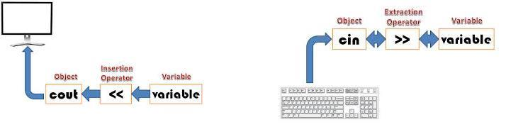
Ormai non ci sono piu' segreti...
OVERLOAD DEGLI OPERATORI + e -
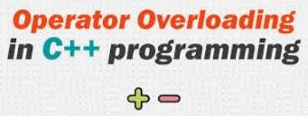
Schema generale di un overload di operatore:
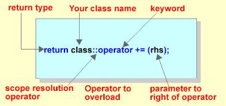
Applicazione dell'overload operatori + e - ad una classe matrice 3 X 3:
xxxxxxxxxx// OnLineCompiler:[https://codeboard.io/projects/302681]using namespace std;
class mat3x3 { double mat[3][3]; // matrice 3 per 3, // ma puoi anche farla 10 X 10 // oppure dinamica con new()
public: mat3x3 operator+(mat3x3 m); // ridefinizione operatore + (solo il prototipo)
mat3x3 operator-(mat3x3 m); // ridefinizione operatore - (solo il prototipo)
void print(); // metodo per l'output void get(); // metodo per l'input }; // fine dichiarazione classe mat3x3
mat3x3 mat3x3::operator+(mat3x3 m) { // codice dell'overload dell'operatore + (somma) mat3x3 app; for (int i = 0; i < 3; i++) for (int j = 0; j < 3; j++) app.mat[i][j] = mat[i][j] + m.mat[i][j]; return app;}
mat3x3 mat3x3::operator-(mat3x3 m) {// codice dell'overload dell'operatore - (differenza) mat3x3 app; for (int i = 0; i < 3; i++) for (int j = 0; j < 3; j++) app.mat[i][j] = mat[i][j] - m.mat[i][j]; return app;}
void mat3x3::print() { for (int i = 0; i < 3; i++) { for ( int j = 0; j < 3; j++ ) cout << setw(10) << mat[i][j]; cout << endl; }}
void mat3x3::get() { for (int i = 0; i < 3; i++) for (int j = 0; j < 3; j++) { cout << "Elemento " << i+1 << j+1 << " ->"; cin >> mat[i][j]; }}
int main() { mat3x3 a,b,c,d; a.get(); b.get(); c = a + b; // OVERLOAD + d = a - b; // OVERLOAD - cout << "Somma : " << endl; c.print(); cout << "differenza :" << endl; d.print(); return 0;}/*** Esercizi:1) Ridefinire gli operatori : /, *, ++, -- per mat3x32) Definire una classe matnxn e tutti gli operatori in modo che n sia <= 103) Definire una classe dinamica di matrici matnxnd, dove la dimensione sia allocata dinamicamente ***/QUALI OPERATORI POSSONO ESSERE “OVERLODATI” ?
I piu' usati sono:
xxxxxxxxxx1 Overload operatori matematici: +, -, *, /
2 Overload operatori di I/O: >> , <<
3 Overload operatori relazionali: >, <, >=, <=, == 4 Overload operatori increm./decrem: ++, --
5 Overload operatori di indici: [ ]
Schema di alcuni operatori sovraccaricabili, suddivisi in unari e binari:
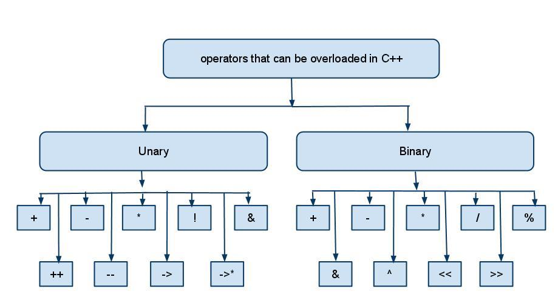
ESEMPIO DI OVERLOAD OPERATORE []
(chiamato anche "overload degli indici")
xxxxxxxxxx// overload-quadre.cpp// L’overload del SOLO OPERATORE [] e' chiamato anche overload degli indici
// OnLineCompiler:[https://codeboard.io/projects/302682]// per exit()using namespace std;
class Vetint { // Vettore di interi, un po' una brutta copia di vector!!// è possibile aumentare MAX..int v[MAX]; // ... ma sarebbe piu' elegante e dinamico con: int *v;
public:
Vetint() { for (int i=0; i < MAX; i++) v[i]=0; } // Costruttore
void get() // metodo per l'input { for (int i=0; i < MAX; i++) { cout << "Elemento v[" << i << "] ->"; cin >> v[i]; } } void put() // metodo per l'output { for (int i=0; i < MAX; i++) { cout << "v[" << i << "] ->"; cout << v[i] << endl; } } int &operator[](const int i) // Overload quadre [] o “degli indici” { if (i <0 || i >= MAX) { cerr <<" Errore, indice [" << i << "] fuori range!!\n"; exit(0); } return v[i]; }}; // FINE DICHIARAZIONE CLASSE Vetint
// Prova nel main() dell'overload operatore quadre (o overload degli indici) int main(){ Vetint v; int i;
cout << "Prova del costruttore, vettore v1 = :\n"; v.put();// stampa vettore inizializzato dal costruttore v.get(); // input da tastiera v.put(); do { cout << "Quale elemento di v[] vuoi vedere ? "; cin >> i; cout << "valore di v[" << i << "] = "; cout << v[i] << endl; // la riga sopra richiama l' OVERLOAD delle [] } while(1); // un po' brutale!!?: si esce solo con errore di indice !!! return 0; }
Continua Operator Overload
ESEMPIO DI OVERLOAD DI VARI OPERATORI ED OVERLOAD DOPPIO (multiplo)
xxxxxxxxxx// ora.cpp: // OVERLOAD OPERATORI MATEMATICI (qui vediamo solo il + e il -// OVERLOAD OPERATORI INCREMENTO/DECREMENTO (++ E --): PREFISSI (e postfissi?)// OVERLOAD OPERATORI DI INPUT / OUTPUT (>> e <<)// OVERLOAD OPERATORI DI CONFRONTO E ASSEGNAZIONE (> < >= <= == = )// DOPPIO OVERLOAD DI UN OPERATORE (Esempio +)
// CLASSE ORA: ore e minuti
// OnLineCompiler:[https://codeboard.io/projects/302683]using namespace std;
class Ora { // Nota la prima lettera maiuscola, si usa di piu' in Java int ore, minuti; // è possibile gestire anche i secondi public: Ora(); // Costruttore, definito esternamente, senza agromenti Ora(int o, int m) // Costruttore con argomenti (Overload del metodo costruttore) { ore=o; minuti = m; } void print() { cout << ore << ":" << minuti; }; Ora operator+(Ora o); // Ora + Ora = Ora Overload del + Ora operator-(Ora o); // Ora - Ora = Ora Overload del - // OVERLOAD OPERATORI ++ e –-
Ora & operator++(); // Overload ++ prefisso: NB il riferimento alla classe (il simbolo &)// L'orario si incrementa di 1 minuto
Ora & operator--(); // Idem per -- prefisso // OVERLOAD OPERATORI I/O ( >> e << ) // NOTA CHE i seguenti due overload NON sono metodi!!!
friend istream & operator>>( istream &in, Ora &d); // Overload >> (input) NON è un metodo ma una funzione friend
friend ostream & operator<<( ostream &out, Ora &d); // Overload << (output) NON è un metodo ma una funzione friend friend int oracmp(Ora a, Ora b); // Per usarla come la strcmp() !! // WOW: OVERLOAD operatori GIA' sovraccaricati sopra !!! // Qui sotto: OVERLODATO DOPPIO, // cioè sovraccaricato in due modi diversi e 2 volte Ora operator+(int minuti); // Operatore +: Ora + int = Ora //Nota che: Ora & operator=(Ora o); NON e' IMPLEMENTATO, //ma l'assegnamento naturale funziona lo stesso
bool operator >(Ora o); // Overload del > (maggiore)
//bool operator == (Ora o); DA FARE come esercizio }; // FINE DICHIARAZIONE CLASSE
Ora::Ora() // Costruttore{ ore=minuti=0;}
Ora Ora::operator+(Ora o) // Ora + Ora = Ora { Ora dep=*this; dep.minuti+=o.minuti; while (dep.minuti >= 60) dep.ore++ , dep.minuti-=60; dep.ore+=o.ore; if (dep.ore > 24) dep.ore %=24; return dep;}
// Ora Ora::operator-(Ora o) // CODIFICARE COME ESERCIZIO
Ora & Ora::operator++() // Overload ++{ Ora dep(0,1); // NOTA: NON è il richiamo di una funzione, // ma di un costruttore *this = *this+dep; return *this;}
//Ora & Ora::operator--() // CODIFICARE COME ESERCIZIO
istream & operator>>( istream &in, Ora &d) // nota: NON è un metodo ma una funzione friend{
cout << "Ora---->"; in >> d.ore; cout << "Minuti->"; in >> d.minuti; in.get(); // pesco invio pendente.. problema come in scanf() return in; // per impilare eventualmente come cin >> n1 >> n2;}
// ostream & operator<<( ostream &out, Ora &d); // RIDEFINIRLO COME ESERCIZIO
Ora Ora::operator+(int minuti) // OVERLOAD DOPPIO dell'Operatore + --> Ora + int minuti = Ora{ Ora dep; // dep.ore è azzerato dep.minuti = minuti; *this = *this+dep; // Precedente overload del + return *this;}
int oracmp(Ora a, Ora b) // valori di ritorno simili alla strcmp(): ritorna <0, 0 oppure >0. // E' friend { if (a.ore != b.ore) return a.ore - b.ore;// se arrivo qui ho che a.ore == b.ore, // e quindi passo a confrontare solo i minuti return a.minuti - b.minuti;}
bool Ora::operator>(Ora o){ return oracmp(*this,o) > 0; // Overload > (maggiore)}// PER ESERCIZIO ridefinisci gli altri operatori di confronto // che mancano (2 qui sotto)
/*** Altri possibili esercizi e domande:
1) L'overload dell'operatore >> (input) usa in. Che succede se usassi cin al posto di in?
2) Codificare gli overload mancanti della classe Ora. (<< (output) , - , –, < >= <= == !=, etc.
3) Codificare overload di I/O per le classi: Vetint e mat3x3
***/Segue il main() per testare la classe Ora
xxxxxxxxxx// main della classe Ora
int main() // [https://codeboard.io/projects/302683]{ Ora a; Ora b(12,30); // Richiamo costruttore con overload Ora c; // Richiamo costruttore base cout << "Input ora A\n"; cin >> a; // Overload input (>>) a.print(); cout << endl;
cout << "Input ora C\n"; cin >> c; // Overload input (>>) c.print(); cout << endl; a = a + b; // Qui sopra l'operatore = (assegnamento) NON e' Overlodato, // ma il + sì! cout << "Eseguo A = A + B; (B valeva 12:30)\n"; a.print(); cout << endl; ++a; // Overload operatore ++ cout << "++A = " ; a.print(); cout << endl; a = a+241; // Richiamo secondo overload dell'oper. +, ora = ora + int cout << " A = A + 241 minuti = " ; a.print(); cout << endl; cout << endl << "A vale "; a.print(); cout << endl << "C vale "; c.print(); cout << endl; if ( a > c) // Overloa operatore > cout << "A e' maggiore di C "; else cout << "A e' minore (o uguale) ad C"; cout << endl; return 0;}
Ereditarietà in C++
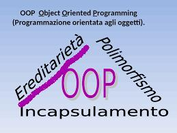
L'ereditarietà: perchè ?
L'ereditarietà domina tutti gli aspetti della vita: uomini, animali e piante ereditano il patrimonio genetico (DNA) dei loro genitori.
L'eredità genetica determina il prodotto finale della vita. L'eredità rende più semplice la creazione di una nuova vita.

Ogni nuovo essere NON nasce da zero, ma eredita i tasselli di un rompicapo che deve essere formato di nuovo, ricomposto ma non reinventato.
In barba all'ereditarietà fino a poco tempo fa i programmatori hanno continuato a scrivere i programmi da zero, “reinventando la ruota” (per così dire ...) praticamente da zero!
Tutti i linguaggi OOP oggi, come il C++, permettono di costruire oggetti nuovi da altri oggetti, ereditando le caratteristiche dei vecchi oggetti.
Comunque Il meccanismo di ereditarietà del C++ è più potente di quello di altri linguaggi orientati ad oggetti (es. JAVA), i quali possiedono solo l'ereditarietà SEMPLICE.
Il C++ prevede anche l'ereditarietà MULTIPLA.

L'ereditarietà (semplice o multipla) rende più facile la programmazione: per i programmi nuovi si deve scrivere molto meno codice, se si trovano classi base che possono essere ereditate. Le classi base devono essere progettate bene e ben DOCUMENTATE, se si vuole ottenere un guadagno considerevole di produttività fin da subito.
E' importante che le classi di partenza siano NON troppo dettagliate e che si limiti l'I/O all'essenziale: altre particolarità verranno aggiunte solo se servono nelle classi derivate.
Ereditarietà: cosa ereditare?
In C++ si ereditano solo CLASSI, cioè OGGETTI, ma non funzioni (metodi) o normali variabili (attributi).
Le classi ereditate sono chiamate classi derivate o classi figlie.
Le classi di partenza: classi base o classi genitrici.
Esempi: (ereditarietà semplice)
Le classi D ed E ereditano da C, le classi C e B ereditano da A.
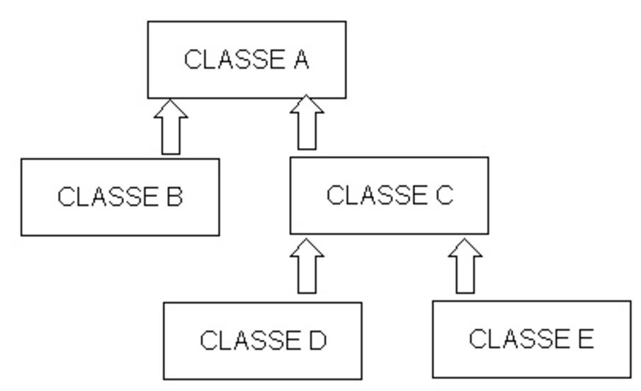
Esempio: (ereditarietà multipla) – SOLO in C++

Qui sopra la classe C e la D ereditano da B, la quale eredita da A..
.. la CLASSE E eredita da 2 classi: La C e la D (ereditarietà multipla)
L'ereditarietà: a che serve ?
Quando studiamo ed impariamo un nuovo concetto (es. le moltiplicazioni e le divisioni) riusciamo ad impararlo facilmente se mettiamo in relazione (in un certo senso “ereditiamo”) il concetto nuovo da uno che già conosciamo bene (es. le somme e le sottrazioni).
Infatti se devo spiegare ad un bambino che sa fare le somme, cosa vuole dire 2 X 5, capirà molto meglio se gli dico che:
2 X 5 = 2 + 2 + 2 + 2 + 2 (cinque volte) !
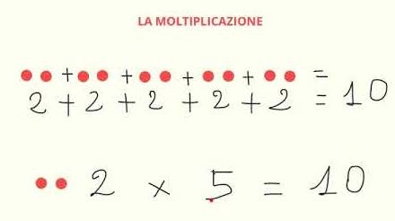
Cosa ho fatto ? --> In un certo senso ... ho “ereditato” la moltiplicazione dalla somma!
Una volta compreso bene la moltiplicazione, sarà altrettanto facile spiegare concetti piu' complessi, riutilizzando il meccanismo!
Posso quindi “ereditare” l'elevamento a potenza dalla moltiplicazione:

L'ereditarietà: primo esempio in C++

xxxxxxxxxx// OnLineCompiler:[https://codeboard.io/projects/302687]// per tangente...using namespace std;
const double pi = 3.1415926; // pigreco
class poligono_regolare { // con un qualsiasi numero di lati >= 3 int nlati; // numero di lati const char *tipo; // es "triangolo", "quadrato", decagono, etc. double lato; // misura del lato
public: // Formula x calcolo area = 1/4 * nlati * lato^2 * cotan(pigreco/nlati); // Wow vale X tutti i poligoni regolari!// NB: cotangente = 1 / tangente poligono_regolare(const char *ti, int nl , double la) // costruttore { tipo = ti, nlati=nl, lato = la; } double perimetro() // calcolo perimetro { return lato * nlati; } void print() // output su video { cout << "Poligono:" << tipo << " - Lati = " << nlati; cout << " - Misura lato = " << lato; } double area() // calcolo area: interessante!!! { return 1.0/4.0 * nlati * (lato*lato) * (1.0 / tan(pi/nlati)); } }; // fine dichiarazione classe POLIGONO REGOLARE
xxxxxxxxxx// classe derivata: triangolo_equilatero // eredita da poligono_regolare
class triangolo_equilatero : public poligono_regolare // significa che definisco una nuova classe chiamata // triangolo_equilatero che eredita dalla classe // poligono_regolare/*** NB in C++ e' possibile ereditare da una classein due modi:
1) class classefiglia: public classebase;→ L'uso della parola chiave public dopo i due punti significa che gli attributi o i metodi della classe base rimarranno dello stesso tipo (public o private o protected) anche nella classe figlia
2) class classefiglia: private classebase;→ Tutti gli attributi ed i metodi della classe base, diverranno private nella classe figlia.(NB: nel caso 2 la parola private puo' essere omessa e quindi e' il caso di default per il C++, anche se e' il meno usato!!!) ****/
{ /// Inizia da qui la nuova classe const char *um; // Unità di misura, nuovo attributo public: // Nuovo costruttore derivato dal costruttore di // poligono_regolare; // fisso il nome, i 3 lati e la lunghezza
triangolo_equilatero(double l, const char *u) : poligono_regolare("Triangolo equilatero", 3,l) { um = u; // unità di misura;} void print() { // metodo SOLO del triangolo equilatero// richiamo il metodo print() della classe poligono_regolare poligono_regolare::print(); // e aggiungo la stampa dell'unità di misura! cout << endl << "Unita' di misura " << um;} // fine print() }; // Fine classe triangolo equilatero
xxxxxxxxxx// programma principale di prova int main() //[https://codeboard.io/projects/302687]{ poligono_regolare p("Quadrato", 4, 5.0); // costruttore p.print(); // Metodo print() del poligono regolare cout << endl; cout << "perimetro = " << p.perimetro(); cout << " - Area = " << p.area() << endl; cout << endl << "----------------------------------" << endl; triangolo_equilatero t(4.0,"Centimetri"); // costruttore, definisco un nuovo oggetto t t.print(); // metodo print() nuovo: quello di triangolo_equilatero cout << endl;
cout << "perimetro = " << t.perimetro(); // la classe figlia triangolo_equilatero NON ha il metodo “perimetro()”, // viene quindi richiamato il metodo della classe genitrice
cout << " - Area = " << t.area() << endl; // come sopra
return 0;}
/*** Esercizi:
1) Che accade se definisco così il costruttore di triangolo_equilatero: triangolo_equilatero(double l, char *u);
2) definire la classe triangolo rettangolo, ridefinendo i metodi di poligono_regolare che NON vanno piu' bene.
3) Ereditare la classe quadrato da poligono regolare, semplificando alcuni metodi e inserendo il metodo diagonale() (ritorna la lunghezza della diagonale)
4) Aggiungere funzione get(), set() e overload di operatori (a scelta)
5) Costruire un costruttore che assegna automaticamente il nome del poligono regolare a seconda del numero di lati ***/
Ereditarietà multipla: quanti "intrecci" anche solo quando usiamo cin e cout

Ereditarietà multipla: esempio in C++

xxxxxxxxxx// OnLineCompiler:[https://codeboard.io/projects/302692]using namespace std;
// esempio di ereditarietà multipla: classe Dataora
class Data { // minimale!
int giorno,mese,anno; public: Data(int g, int m, int a) { giorno = g; mese = m; anno = a; } // costruttore void print() { cout << giorno << '/'; cout << mese << '/' << anno << ' '; } }; // fine classe DataSegue classe Ora
xxxxxxxxxxclass Ora { // minimale! int ora, minuto, secondo; // attributi public: Ora(int o, int m, int s) { ora = o; minuto = m; secondo = s; } // costruttore void print() { cout << ora << ':' << minuto << ':' << secondo << ' '; }
void azzera() { ora = minuto = secondo = 0; } }; // fine classe Ora xxxxxxxxxxclass Dataora : public Data, public Ora // Dataora eredita da Data e da Ora{ const char *giorno; // nuovo attributo, solo in Dataora public:
Dataora():Data(1,1,1980), Ora(23,59,59) // Costruttore senza parametri { giorno = "lunedi" ; } Dataora(int gg,int mm,int aa, const char *gs, int o,int mi,int se) : Data(gg,mm,aa), Ora(o,mi,se) // costruttore con tutti i parametri { giorno = gs; } void print() // metodo print { cout << giorno << ' '; Data::print(); // print di Data Ora::print(); // print di Ora }
}; // fine classe Dataora
Segue main()
xxxxxxxxxxint main() // prova delle tre classi: Data, Ora e Dataora{ // [https://codeboard.io/projects/302692] Ora o(10,0,0); Data d(1,1,2007); Dataora od; cout << "Ora : "; o.print(); cout << endl; cout << "Data : "; d.print(); cout << endl; cout << "Dataora: "; od.print(); cout << endl; od.azzera(); // Azzera solo l'ora cout << "Dataora, dopo azzera(): "; od.print(); cout << endl; Dataora adesso(15,5,2013,"mercoledi",8,38,3); // richiamo costruttore con parametri cout << "Oggi e': "; adesso.print(); cout << endl; return 0;}
Ereditarietà : approfondimenti e attributi PROTECTED
xxxxxxxxxx// OnLineCompiler:[https://codeboard.io/projects/302698]using namespace std;
const char *vuoto = "Vuoto "; // nome o cognome vuoto class Marito { const char *cognome; const char *nome;
public: int anno; // anno di nascità: pubblico... float stipendio; // pubblico... Marito() // Costruttore { nome = cognome = vuoto; anno = 1900; } void print() { cout << "Cognome " << cognome << endl << "Nome " << nome << "\nnato nel " << anno << endl; } }; // Fine classe Marito xxxxxxxxxx
class Moglie { private: int anno; // anno di nascità privato… e’ una donna.... protected: const char *cognome; // attributo protected public: const char *nome; Moglie() // Costruttore { nome = cognome = vuoto; anno = 1990; } void print() { cout << "Cognome " << cognome << endl; cout << "Nome " << nome << "\nnata nel "<< anno << endl; } }; // fine classe Moglie xxxxxxxxxx class Famiglia : public Marito, public Moglie // Famiglia eredita da Marito e da Moglie { int sposati; // Anno in cui si sono sposati public: Famiglia(int spos = 2010) // costruttore con parametro di default { sposati = spos; } Famiglia(const char *cogn, int spo) // Un SOLO COGNOME { //Marito::cognome = cogn; //QUESTO SEGNALA errore!!! Moglie::cognome = cogn; // Questo VA BENE! E’ protected sposati = spo; // anno in cui si sono sposati } void print() { cout << "Marito:"<< endl; Marito::print(); cout << "Moglie:"<< endl; Moglie::print(); cout << "sposati nel " << sposati; } }; // fine classe Famiglia xxxxxxxxxxint main() // [https://codeboard.io/projects/302698]// prova classe famiglia, ereditarietà multipla, uso dell'operatore ::{ Famiglia rossi, verdi(1980), bianchi("Bianchi",1985); cout << "Famiglia Rossi:\n"; rossi.print(); // Viene richiamato il costruttore di ciascuna classe ? cout << "\n---------------\n"; cout << "Famiglia Verdi:\n"; verdi.print(); cout << "\n---------------\n"; cout << "Famiglia Bianchi:\n"; bianchi.print(); Moglie mo; Marito ma; //ma.nome = "Giorgio"; // va bene ? //ma.cognome = "Bruni"; // va bene //ma.anno = 1992; // va bene //mo.nome = "Maria"; // va bene ? //mo.cognome = "Bruni"; // va bene //mo.anno = 1988; // va bene //bianchi.stipendio = 2000.0; // va bene ? //bianchi.cognome = "Bianconi"; // va bene ? //bianchi.anno = 1997; // va bene ? //bianchi.Marito::anno = 1877; // va bene ? return 0;}
/*** ESERCIZI:
1) Assegnare la Moglie m ed il Marito p alla Famiglia rossi;
2) Scrivere il metodo: Famiglia Famiglia::matrimonio(Class Marito, Class Moglie)
3) Scrivere la classe Figlio, ereditando da famiglia
4) Costruire i seguenti overload: A) famiglia = marito + moglie; B) marito = famiglia - moglie; C) moglie = famiglia - marito;
5) Costruire il seguente metodo: bool Figlio::fratello(Figlio f) // se hanno uguali mamma e papa'
6) Costruire la classe Persona da cui ereditare Marito e Moglie
***/
Approfondimento sull'uso dell'operatore ::
"Riciclo" di funzioni base C per "Inventare" una nostra classe stringa
Vogliamo riusare (alla C++) tutte le funzioni sulle stringhe che conosciamo e abbiamo già usato in C. Potremmo pensare alle usatissime strcpy, strlen, strcat, strcmp, etc.
Potremmo poi aggiungere alla nostra classe vari overload di operatori, come >> <<, [], +, >, <, ==, etc. Partiamo dalla seguente idea (molto interessante e soprattutto molto comoda: non codifico nessun metodo nuovo!!!)
(NB: naturalmente in C++ una potente classe sulle stringhe esiste già ed è la string.)
Qui lo facciamo solo per mettere in luce un modo interessante per riutilizzare, se vogliamo, tutto quello che già conosciamo del C. Vedi l'idea abbozzata qui sotto:
xxxxxxxxxx// OnLineCompiler:[https://codeboard.io/projects/302700]using namespace std;
class stringa { char s[LSTR]; // unico attributo della classepublic: void strcpy(const char t[LSTR]) // Nota bene questo metodo! { ::strcpy(s,t); // Ecco come sfruttare la vecchia strcpy() in string.h del C // Nota l'uso dell'operatore ddi risoluzione ambito d'azione :: } void print() { cout << s; }};
int main() { stringa str; str.strcpy("ciao"); str.print(); return 0;}// Esercizio: Completa la classe con tutte le funzioni sulle stringhe del C che conosci e correda la classe di vari overload di operatori, come >> <<, [], >, <, ==, etc. Codifica infine un main di provaPolimorfismo
(late binding, metodi virtual, classi astratte)

Per comprendere meglio il polimorfismo, occorrono alcuni concetti base:
early binding: il normale processo in cui il compilatore assegna in fase di compilazione la corretta funzione o metodo richiamato dal programmatore, es:
xxxxxxxxxxsomma(a,b); /// Somma di due numeri in C o C++
c.print(), d.print(), print(), print(a), … /// varie print() con overload di funzione o di metodo /// o anche parametri di default in C++
late binding: l'aggancio fra il programma chiamante e la funzione chiamata é ritardato dal momento dalla compilazione a quello dell'esecuzione, perché solo in quella fase il C++ può conoscere la funzione (o metodo) selezionata, in base ai dati che condizionano il flusso del programma.

Polimorfismo: Nella terminologia del C++, polimorfismo significa: mandare agli oggetti lo stesso messaggio ( cioe' chiamare un metodo con lo stesso nome) ed ottenere da essi comportamenti diversi, sul modello della vita reale, in cui termini simili determinano azioni diverse, in base al contesto in cui vengono utilizzati.
Tuttavia il polimorfismo che abbiamo esaminato finora é solo un meccanismo di overload, cioè di un meccanismo che, come sappiamo, permette al C++ di riconoscere e selezionare la funzione già in fase di compilazione (early binding).
Il "vero" polimorfismo dovrebbe essere associato al late binding: la differenziazione di comportamento degli oggetti in risposta allo stesso messaggio non deve essere statica e predefinita, ma dinamica, cioè deve essere determinata dal contesto del programma in fase di esecuzione.
Ciò é realizzabile solo nell'ambito dell'ereditarietà di classi: il "vero" polimorfismo si applica a funzioni-membro (metodi), con lo stesso nome e gli stessi argomenti, che appartengono sia alla classe base che alle sue derivate.
Puntatori a classi base e derivate
Prendiamo il caso di due classi, di nome A e B, dove A é la classe base e B una sua derivata.
Consideriamo due istanze, a e b, rispettivamente di A e di B.
Supponiamo inoltre che entrambe le classi contengano una funzione-membro, di nome cresce(), non ereditata da A a B, ma ridefinita in B.
Sappiamo che ogni volta il compilatore seleziona la funzione che appartiene alla stessa classe a cui appartiene l'oggetto (cioè la classe indicata nell'istruzione di definizione dell'oggetto), e quindi:
xxxxxxxxxx a.cresce() //seleziona la funzione-membro di A b.cresce () //seleziona la funzione-membro di BIn C++ ad un puntatore definito per una classe base, possono essere assegnati indirizzi di oggetti di classi derivate, e quindi il seguente codice é perfettamente valido:
xxxxxxxxxxA *ptr;if ( condizione ) ptr = &a; else ptr = &b; in questo caso, dinanzi all'eventuale istruzione:
xxxxxxxxxxptr->cresce(); come si regola il compilatore C++?
(Infatti che l'oggetto a cui punta ptr é determinato in fase di esecuzione!)
RISPOSTA:
Di default, essendo ptr definito come puntatore alla classe A, viene selezionata la funzione cresce() della classe A, anche se in esecuzione l'oggetto puntato dovesse appartenere alla classe B.
Metodi virtuali (virtual) e vero polimorfismo
Se però, nella definizione della classe A, la funzione cresce() é dichiarata con lo specificatore "virtual", il C++ rinvia la scelta della funzione appropriata alla fase di esecuzione (late binding).
In questo modo si realizza il vero polimorfismo: lo stesso metodo (cresce), inviato a oggetti di classi diverse, induce a diversi comportamenti, in funzione dei dati del programma.
Si veda, a titolo di esempio, il codice seguente dove le classi A e B diventano la classe Albero (classe padre) e Abete (classe figlia):
xxxxxxxxxx/// Polimorfismo in C++
// OnLineCompiler:[https://codeboard.io/projects/302701]using namespace std;
class Albero{ public: virtual void cresce(const char msg[]) /// Prova a commentare "virtual" { cout << msg << "-->"; cout << "Metodo cresce della classe Albero\n"; } void print() { cout << "Metodo print() di Albero\n"; }};
class Abete : public Albero /// Abete eredita da Albero{ public: void cresce(const char msg[]) { cout << msg << "-->"; cout << "Metodo cresce della classe Abete\n"; }};
int main(){ Albero *pa=new Albero; Abete *pb=new Abete; Albero a; Abete b; Albero v[2] = { a, b}; /// Vettore di 2 alberi Albero *vp[2]; /// Vettore di 2 pointer ad alberi (e/o abeti)
v[0].cresce("1"); /// Usa il metodo cresce di albero v[1].cresce("2"); /// Usa il metodo cresce di albero anche qui
vp[0]= pa; vp[1]= pb; pa->print(); pb->print(); /// pb eredita il metodo print() da Abete
pa->cresce("3"); /// richiamo di albero pb->cresce("4"); /// richiamo cresce di abete, pb e'un pointer ad Abete
vp[0]->cresce("5"); /// richiamo di albero vp[1]->cresce("6"); /// richiamo cresce di abete solo se cresce è virtual
delete pa; delete pb;
Albero *al = new Abete(); al->cresce("7"); /// Usa il metodo cresce di abete se cresce e' virtual delete al; return 0;}
Classi astratte
Una classe base, se definita con funzioni virtuali, "spiega" cosa sono in grado di fare gli oggetti delle sue classi derivate. Nel nostro esempio, la classe base Albero "spiega" che tutti gli oggetti del programma possono richiamare la propria funzione cresce(). In sostanza la classe base fornisce, oltre alle funzioni, anche uno "schema di comportamento" per le classi derivate.
Estremizzando questo concetto, si può creare una classe base con funzioni virtuali senza codice, dette funzioni virtuali pure. Non avendo codice, queste funzioni servono solo da "schema di comportamento" per le classi derivate e vanno dichiarate nel seguente modo:
xxxxxxxxxxvirtual void cresce() = 0; (nota: questo è l'unico caso in C++ di una dichiarazione con inizializzazione!) in questo esempio, si definisce che ogni classe derivata avrà una sua funzione di visualizzazione, chiamata sempre con lo stesso nome (cresce), e selezionata ogni volta correttamente grazie al polimorfismo.
Una classe base con almeno una funzione virtuale pura è detta classe base astratta, perché definisce la struttura di una gerarchia di classi, ma non può essere istanziata direttamente, cioè non si può dichiarare un oggetto di una classe base!
A differenza dalle normali funzioni virtuali, le funzioni virtuali pure devono essere ridefinite tutte nelle classi derivate (anche con "corpo nullo", quando non servono). Se una classe derivata non ridefinisce anche una sola funzione virtuale pura della classe base, rimane una classe astratta e non può ancora essere istanziata (a questo punto, una sua eventuale classe derivata, per diventare "concreta", è sufficiente che ridefinisca l'unica funzione virtuale pura rimasta).
Le classi astratte sono di importanza fondamentale nella programmazione in C++ ad alto livello, orientata a oggetti. Esse presentano agli utenti delle interfacce "pure", senza il vincolo degli aspetti implementativi, che sono invece forniti dalle loro classi derivate.
Si veda il codice C++ che segue, come esempio di interfaccia (classe astratta):
xxxxxxxxxx// OnLineCompiler:[https://codeboard.io/projects/302705]using namespace std;
class Forma { /// classe astratta, o interfaccia public: ///muovi() e disegna sono funzioni virtuali pure virtual void disegna() = 0; // disegna la figura virtual void muovi() = 0; // muove la figura};
class Quadrato : public Forma { public: void disegna() { cout << "disegna Quadrato..." << endl; } void muovi() { cout << "muovi Quadrato..." << endl; }};
class Triangolo : public Forma { public: void disegna() { cout << "disegna Triangolo..." << endl; } void muovi() { cout << "muovi Triangolo..." << endl; }};
class Cerchio : public Forma { public: void disegna() { cout << "disegna Cerchio..." << endl; } void muovi() { cout << "muovi Cerchio..." << endl; }};
void lavoro(Forma *Forma) { Forma->disegna(); /// Polimorfismo Forma->muovi(); /// Polimorfismo }
int main() { /// Forma a; /// Errore! e' astratta... prova a decommentare... Forma* q = new Quadrato(); Forma* t = new Triangolo(); Forma* c = new Cerchio(); lavoro(q); lavoro(t); lavoro(c); delete(q); delete(t); delete(c);}/***Esercizi:
1)Ridefinire la classe POLIGONO REGOLARE come CLASSE ASTRATTA (interfaccia)
2)Ridefinire Triangolo, quadrato e cerchio che EREDITANO da POLIGONO REGOLARE
3)Evidenziare il polimorfismo su alcuni metodi
4)Classe Forma —> polig regolare—> quadrato, triangolo, etc.
5)Provare polimorfismo con doppia ereditarietà.
6)Disegna le figure con winbgim!
***/
Template: cosa sono e come utilizzarli

Un "abbozzo" di template c'era anche in C
Si faceva così (con il preprocessore):
xxxxxxxxxx// OnLineCompiler:[https://codeboard.io/projects/302709]// Massimo su tipi di baseint main() { // in C con preprocessore int a=7, b=-2, m; m = MAX(a,b); // provare a cambiare a,b,m in long, float, double e anche char... funziona!! printf("Max fra %d e %d e' %d\n",a,b, m); // .. ricordati pero' di usare il giusto specificatore %.. quando stampi in C return 0;}xxxxxxxxxx/*** PS: In C++ si puo’ anche fare con un overload di funzione per ogni tipo base (ma si scrive piu' codice...) ***/// [https://codeboard.io/projects/302710]using namespace std;
int max(int a, int b) { return a>b ? a : b;}double max(double a, double b) { return a>b ? a : b;}// continua ... devi definire una max() per ogni tipo base: long, char, ...const char *max(const char *a, const char *b) { // pero' questa in C non e' possibile!! return strcmp(a,b) > 0 ? a : b; // WOW max anche su stringhe... ci hai mai pensato?}// "abbozzo di template" in C++ con overload di funzione: NON e' un template ;)int main() { int a=7, b=-2, m; // provare a cambiare a,b,m in long, float, double... const char *sa = "Albero", *sb = "Alberto", *sm; m = max(a,b); sm = max(sa,sb); cout << m << " " << sm << endl; return 0;}Ecco un "vero" Template (funzione template):
Il meccanismo dei template rende disponibile una “nuova” tecnica di programmazione, detta “programmazione generica” che si differenzia dalle altre tecniche, come ad esempio programmazione imperativa, funzionale, ad oggetti, ad eventi...
Una funzione template non è altro che codice parametrico.
Anche le funzioni ordinarie usano parametri, ma... con i template i parametri possono essere di vario tipo nella stessa funzione (o metodo), mentre nelle funzioni ordinarie devono essere unicamente di un certo tipo.
xxxxxxxxxx// [https://codeboard.io/projects/302712]using namespace std;
template <typename T> T Max(T a, T b) {// max è una funzione template// T è un tipo qualsiasi,come int, long, double, oppure struct o class // La sintassi precedente, meno coerente, era: template <class T> T max(T a, T b) return a > b ? a : b;} int main() { // in C++ con TEMPLATE!!! float a=7.3, b=-2.1, m; // provare a cambiare a,b,m in long, float, double, o altro... // ... e funziona!!! m = Max(a,b); cout << "Max fra " << a << " e " << b << " e' " << m << endl; return 0;}/*** Esercizio (vivamente consigliato):aggiungere la classe Stringa o Data e verificare che il template Max funzioni lo stesso!!!suggerimento-> codificare l'overload dell'operatore > nella classe!!***/CLASSI TEMPLATE: come si utilizzano

Realizzo una semplice classe template stack con un semnplice array
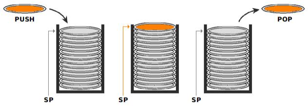
xxxxxxxxxx/*** Nota anche l'overload del >> nella classe templateche richiama un oggetto (in questo caso una struct libri) che contiene gia' un overload interno del >> ***/
// OnLineCompiler:[https://codeboard.io/projects/302713]using namespace std;
///Classe Template: stack
// puoi aumentare a piacere MAX
template<typename T> class stack{ T v[MAX]; /// stack di elementi, o pila int cima; /// puntatore alla cima della pilapublic: stack(); /// costruttore codificato esternamente
void push(T); /// codificato esternamente
T pop() /// ritorna un tipo T (template) { if (cima == 0) /// stack vuoto! exit(0); /// Per ora esco!!, non e' un gran che!!! return v[--cima]; /// ritorno l'elemento in cima }
int elementi() /// ritorna il numero di elementi /// Stack Pointer { return cima; /// se ci sono 5 elementi, ritorna 5 } friend ostream& operator<<(ostream& out, class stack &t) /// wow: overload del >> su una classe Template!!! { while(t.elementi()!=0) /// li estrae... out << t.pop(); /// e li stampa se t e' una classe... } /// ...occorre che sia overlodato il << nella classe di partenza }; /// fine dichiarazione classe template, segue sotto...
xxxxxxxxxx/// NB puo' essere piu' semplice scrivere all'interno/// della classe i metodi.../// Ad esempio il metodo elementi(), che ritorna il numero di elementi,/// l'ho scritto all'interno della classe template
template<typename T> stack<T>::stack()/// costruttore, codificato fuori dalla classe template/// provate a spostarlo dentro e la sintassi si accorcia..{ cima = 0;}
template<typename T> void stack<T>::push(T t)/// metodo push() codificato esternamente{ if (cima < MAX-1) v[cima++] = t; else cerr << "Errore push(), raggiunto limite di " << MAX << " elementi\n";} // continua...
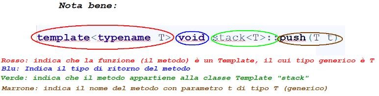
Continua (classe data / struct libro di prova)
xxxxxxxxxx/// Classe: data [https://codeboard.io/projects/302713]class data /// Classe minimale ... solo per testare la classe Template stack!{ int gg; int mm; int aa;public: data() { gg=mm=1; aa=1980; }; /// costruttore bool zero() /// vero se giorno == 0 { return gg==0; }; /// un metodo
/// overload << e >> friend istream & operator>>( istream &in, data &d) { /// semplice overload operatore di input cout <<"giorno->"; in >> d.gg; cout <<"mese->"; in >> d.mm; cout <<"anno->"; in >> d.aa; }
friend ostream & operator<<( ostream &out, data d) { /// semplice overload di output out << d.gg << '/' << d.mm<< '/' << d.aa << endl; return out; }}; /// fine classe di prova: data.
/// struttura (ebbene si .. da non credere .. in C++ i Templete// vanno anche con le struct!// Per testare la classe Template stack: codifico la struct libro
/// Lunghezza massima del titolo del librostruct libro{ int codice; /// codice del libro (un numero progressivo) char titolo[LDESC+1];
friend ostream & operator<<( ostream &out, libro l) { /// wow, overload del << (output) su una struct!!! cout << "Codice=" << l.codice << endl; cout << "Descrizione=" << l.titolo << endl; cout << "----------------------------------------\n"; return out; }
}; /// fine struct di prova: libro
/// WOW ed ora provo la classe Template stack con ben 3 elementi diversi:///1) un oggetto (date)///2) una struct (libro)///3) un tipo base (float)
void stack_di_float() /// prova con float{ stack<float> valori; /// valori e' uno stack di float! float f; while(1) { cout << "Valore float [0] = fine ->"; cin >> f; if (f == 0.0 ) break; valori.push(f); /// metodo push() usato su un float }; while(1){ /// il metodo pop() termina alla fine con exit()... f = valori.pop(); /// metodo pop(), ritorna un float cout << "Valore : " << f << endl; }}
void stack_di_libri() /// prova con struct libro{ stack<libro> libri; /// libri e' uno stack di libri libro l; /// variabile di appoggio di tipo struct libro while(1) { /// perdonatemi il while ... cout << "Codice libro [0] = fine ->"; cin >> l.codice; cin.get();/// pesco \n pendente if (l.codice == 0 ) break; /// si esce dal while... cout << "Titolo libro -->"; cin.getline(l.titolo,LDESC); libri.push(l); /// Uso il metodo push con una struct (libro) }; cout << libri; /// Overload del operatore << definito nel Template!!!}
void stack_di_date() /// prova con class data{ stack<data> sd; /// stack di classi data data d; /// data di appoggio
while(1) /// si ferma se metto come data 0/0/0 { cin >> d; /// overload di >> nella classe data if (d.zero()) break; sd.push(d); // Uso il metodo push con una classe: data };
cout << sd; /// overload dell'output nella classe Template stack}
// continua... con il main() di provaMain() di prova
xxxxxxxxxx
int main() // per testare il template stack{ // [https://codeboard.io/projects/302713] int scelta; cout << "1=float,2=libro,3=data ->"; cin >> scelta; if (scelta==1) stack_di_float(); else if (scelta==2) stack_di_libri(); else // 3 o altro stack_di_date(); return 0;}
/*** Esercizi consigliati:
1) Inserisci nella classe Template stack il metoto void pushC(T t) che inserisce in coda l'elemento t
2) Migliora l'overload dell'output (operator<<) nella classe stack in modo che NON stacchi gli elementi quando li visualizza
3) Codifica il metodo sort() nella classe Template stack che ordina gli elementi (suggerimento: definisci nella struct libro e nella classe data l'overload dell'operatore > (maggiore) ) ***/
Template dinamici
Ripasso: lista dinamica gestita a pila in C++
(per comprendere meglio il Template dinamico che segue)
xxxxxxxxxx/// La lista, gestita a pila, contiene una struct di tipo libro
// OnLineCompiler:[https://codeboard.io/projects/302715]using namespace std;
struct libro{/// Lunghezza max del titolo del libro in caratteri int codice; char titolo[LTIT+1]; /// c'e' anche il terminatore...\0};
struct nodo{ libro l; /// libro interno nodo *succ; /// puntatore al nodo successivo};
class PilaLibri{ nodo *testa; /// puntatore alla testa della lista public:
PilaLibri() /// Costruttore { testa = NULL; }
void push( libro l) /// Aggancio del nuovo nodo con elemento /// t in testa (cima) alla pila { nodo * appoggio = new nodo; appoggio->l = l; appoggio->succ = testa; testa = appoggio; }
bool pop(libro &l) /// Pesco, tolgo e ritorno l'elemento in /// testa (cima) alla pila { /// si puo' migliorare, deallocando anche la memoria... if ( testa == NULL) return false; /// Qui la lista NON e' vuota l = testa->l; testa = testa->succ; return true; }}; // continua con il main() ...xxxxxxxxxxint main() // Prova lista stack...{ // [https://codeboard.io/projects/302715] libro l; PilaLibri P;
while(true) // Brutale... { cout << "Codice libro [0] = fine ->"; cin >> l.codice; cin.get(); /// pesco invio pendente; if (l.codice == 0 ) // Uscita con zero break; cout << "Titolo libro -->"; cin.getline(l.titolo,LTIT); P.push(l); }
while(P.pop(l)) cout << "Codice: " << l.codice << " - Titolo: " << l.titolo << endl; return 0;}/*** Esercizio: Aggiungere il metodo pushc() che aggiunge in coda un libro***/
Ed ora … wow!

Stack con classe template che implementa la pila con una lista dinamica
xxxxxxxxxx/// Il codice dimostra come, con una classe Template, in C++/// sia possibile scrivere codice MOLTO generale./// Supponiamo di voler scrivere liste dinamiche gestite a pila (stack)/// di tipi diversi. In C sono obbligato a definire funzioni diverse/// push() e pop() per ogni oggetto. Con I Template posso generalizzare/// il codice C++ e adattarlo a qualsiasi oggetto (non solo classi, ma anche/// a tipi semplici come char, float, int, long, double... e strutture (struct)// OnLineCompiler:[https://codeboard.io/projects/302722]using namespace std;
template <typename T> struct nodo /// Nodo della lista con T tipo qualsiasi{ T t; /// t e' un tipo generalizzato: /// un float, una struc, una class, etc. nodo<T> *succ; /// puntatore al nodo successivo nella lista};
template<typename T> class stack{ nodo<T> *testa; /// Puntatore alla testa della lista
public:
stack() /// costruttore { testa = NULL; } void push( T t) /// Aggancio del nuovo nodo con elemento t /// in testa (cima) alla pila { nodo<T> * appoggio = new nodo<T>; appoggio->t = t; appoggio->succ = testa; testa = appoggio; }
T pop() /// Pesco, tolgo e ritorno l'elemento /// in testa (cima) alla pila { T t; if ( testa == NULL) exit(0); /// Non e' il massimo!!! /// Qui la lista NON e' vuota t = testa->t; testa = testa->succ; return t; }
friend ostream& operator<<(ostream& out, class stack &t) /// overload << su classe Template stack { while(t.testa) out << t.pop(); }}; /// fine dichiarazione classe Template stack
/** Esercizio per completare il codice qui sopra, puoi usare tre precedenti elementi: 1) Uno stack di float (tipo semplice)2) Uno stack di libri (struct)3) Uno stack di date (class)A)copia ed incolla in un file .cpp vuoto la classe Template stack dinamica definita sopraB)aggiungi al file .cpp il codice della classe (ad es.data) che trovi nella precedente classe Template stack (copia/incolla senza la vecchia classe Template stack, cioe' dalla linea: /// Classe: data fino alla fine del main() )C) compila ed esegui: nota come hai cambiato completamente il Template class stack, da una versione precedentemente statica ad una che ora e' dinamica, e tutto il codice continua a funzionare senza cambiare nulla!!!**/
/*** Altri Esercizi consigliati:0) Prova il Template stack su un'altra classe (es. string ) 1) Inserisci nella classe Template stack il metoto void pushC(T t) che inserisce in coda l'elemento t2) Migliora l'overload dell'output (operator<<) nella classe stack in modo che NON stacchi gli elementi quando li visualizza3) Libera la memoria con delete nel metodo pop() ed evita la exit() nel caso lo stack sia vuoto4) Codifica il metodo pushOrder() che infila un nuovo elemento in ordine suggerimento: definisci nella struct libro e nella classe data l'overload dell'operatore > (maggiore)***/
Ed ora ... wow wow!
Template dinamico che raccoglie oggetti di qualsiasi tipo, li memorizza in ordine e permette la ricerca in un BST (albero binario di ricerca)
xxxxxxxxxx
// OnLineCompiler:[https://codeboard.io/projects/302726]using namespace std;
template <typename T> struct nodo { /// nodo con T tipo qualsiasi T t; /// t e' un tipo generalizzato: /// un float, una struct, una classe, etc. nodo<T> *sin,*des; /// puntatori al sottoalbero di sinistra e di destra};
template<typename T> class albero { nodo<T> *r; /// Puntatore alla radice deell'albero public: albero() /// costruttore { r = NULL; /// r== radice dell'albero }
private: // metodi interni PRIVATI, per semplificare quelli pubblici
void inserisci(nodo <T> * &r, T elem ) { // crea BST if(r==NULL) { r = new nodo<T>; r->t = elem; r->sin = r->des = NULL; } else { if (elem > r->t) inserisci(r->des,elem); else inserisci(r->sin,elem); } }
void visita(nodo <T> *r) { // visita in ordine nel BST if (r != NULL) { visita(r->sin); cout << r->t << endl; visita(r->des); } }
nodo<T> *ricerca(nodo <T> *r, T dato) { // ricerca dato if (r== NULL || r->t == dato) // Occorre overload ==? return r; else if (dato > r->t) return ricerca(r->des,dato); else return ricerca(r->sin,dato); }
public: // front end: metodi pubblici semplici!!!
void insert(T elem) { inserisci (this->r, elem); }
void visit() { visita(this->r); }
bool find(T dato) { return ricerca(this->r,dato) != NULL; }
friend ostream& operator<<(ostream& out, class albero &a) /// overload << su classe Template albero { a.visit(); return out; }}; /// fine dichiarazione classe Template albero
/// Classe: data minimaleclass data { /// Classe solo per testare la classe Template BST int gg; int mm; int aa; public: data() { gg=mm=1; aa=1980; }; /// costruttore bool zero() { /// vero se giorno == 0 return gg==0; }; /// un metodo/// overload << e >> friend istream & operator>>( istream &in, data &d) { /// semplice overload operatore di input cout <<"giorno->"; in >> d.gg; cout <<"mese->"; in >> d.mm; cout <<"anno->"; in >> d.aa; return in; }
friend int datecmp(data d1,data d2) { // Friend if(d1.aa != d2.aa) return d1.aa-d2.aa; if(d1.mm != d2.mm) return d1.mm-d2.mm; return d1.gg-d2.gg; }
bool operator>(data d) { return datecmp(*this,d) > 0; }
friend ostream & operator<<( ostream &out, data d) { /// semplice overload di output out << d.gg << '/' << d.mm<< '/' << d.aa << endl; return out; }}; /// fine classe di prova: data.
// struttura per testare la classe Template albero: libro/// Lunghezza massima del titolo del librostruct libro { int codice; /// codice del libro (un numero progressivo) char titolo[LDESC+1]; friend ostream & operator<<( ostream &out, libro l) { /// wow, overload del << (output) su una struct!!! cout << "Codice=" << l.codice << endl; cout << "Descrizione=" << l.titolo << endl; cout << "----------------------------------------\n"; return out; } bool operator>(libro l) { return codice > l.codice; }}; /// fine struct di prova: libro
/// WOW ed ora provo la classe Template albero con ben 3 elementi diversi:///1) un oggetto (date)///2) una struct (libro)///3) un tipo base (float)
void albero_di_float() { /// prova con float albero<float> valori; /// valori e' uno albero di float! float f; while(1) { cout << "Valore float [0] = fine ->"; cin >> f; if (f == 0.0 ) break; valori.insert(f); /// metodo inserisci() usato su un float }; valori.visit(); // richiamo metodo visita while(1) { // Prova ricerca cout << "Valore float da ricercare? [0] = fine ->"; cin >> f; if (f == 0.0 ) break; cout << "Valore " << f <<" "; if (valori.find(f)) cout << "presente"; else cout << "non presente"; cout << endl; };}
void albero_di_libri() { /// prova con struct libro albero<libro> libri; /// libri e' un albero binario di libri libro l; /// variabile di appoggio di tipo struct libro while(1) { /// perdonatemi il while true cout << "Codice libro [0] = fine ->"; cin >> l.codice; cin.get();/// pesco \n pendente if (l.codice == 0 ) break; /// si esce dal while... cout << "Titolo libro -->"; cin.getline(l.titolo,LDESC); libri.insert(l); /// Uso il metodo insert con una struct (libro) }; cout << libri; /// Overload del operatore << definito nel Template albero!!!}/// fine prova con struct libro
void albero_di_date() { /// prova con class data albero <data> ad; /// albero di oggetti data data d; /// data di appoggio while(1) { /// si ferma se metto come data 0/0/0 cin >> d; /// overload di >> nella classe data if (d.zero()) break; ad.insert(d); // Uso il metodo push con una classe: data }; cout << ad; /// overload dell'output nella classe Template albero}
int main() { // [https://codeboard.io/projects/302726] int scelta; cout << "1=float,2=libro,3=data ->"; cin >> scelta; if (scelta==1) albero_di_float(); else if (scelta==2) albero_di_libri(); else albero_di_date(); return 0;}// The End
Ultime considerazioni

La Libreria Standard del C++ è costituita da un vasto numero di classi e funzioni che trattano principalmente di:
- Input-Output;
- gestione delle stringhe;
- gestione degli oggetti "contenitori" di altri oggetti (detti: elementi), quali: gli array, le liste, le code, le mappe, gli insiemi ecc...;
- utilizzo degli "algoritmi", per eseguire operazioni sui contenitori e sui loro elementi, quali: ricerca, conteggio, inserimento, sostituzione, ordinamento, merging ecc...; sono previste anche operazioni specifiche, eseguite tramite oggetti-funzione forniti dall'utente o dalla stessa Libreria;
- operazioni numeriche e matematiche su numeri reali o complessi;
- informazioni riguardanti aspetti del linguaggio che dipendono dall'implementazione (per esempio: il massimo valore di un float).
La programmazione generica è largamente applicata nella Libreria: infatti, nella grande maggioranza le sue classi e funzioni sono template (o specializzazioni di template). Questo fa sì che le stesse operazioni siano applicabili a una vasta varietà di tipi, sia nativi che definiti dall'utente.
Header files nuovi standard
Le classi e le funzioni della Libreria Standard sono raggruppate in una cinquantina di header files, i cui nomi seguono una particolare convenzione: non si usa più l’estensione (cioè non hanno .h). Per esempio, il principale header file per le operazioni di input-output è
In ogni header file si trova di solito una classe (con le eventuali classi derivate se è presente una gerarchia di classi), e varie funzioni esterne di appoggio, soprattutto per la definizione di operatori in overload.
La Libreria Standard del C++ ingloba la Run Time Library del C, i cui header files possono essere specificati in due modi:
- con il loro nome tradizionale, per esempio <stdio.h> (vecchio standard)
- con i nomi della convenzione C++, senza .h, ma con la lettera c davanti, per esempio
Il namespace std (finalmente… spiegato!)
Tutta la Libreria Standard del C++ è definita in un unico namespace, che si chiama: std.
Pertanto i nomi delle classi, delle funzioni e degli oggetti definiti nella Libreria dovrebbero essere qualificati con il prefisso std::. Per esempio, le operazioni di ouput sul dispostitivo standard vanno scritte:
xxxxxxxxxxstd::cout << ..... invece di : cout << .....
Qui ho sempre è trasferito l'intera Libreria nel namespace globale, mediante la using directive: using namespace std;
xxxxxxxxxx// di solito abbiamo sempre usato quanto segue:
// e infine la using directive:using namespace std;
La STL (cenni)
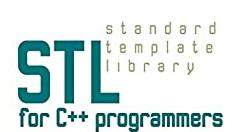
Un'importante sottoinsieme della Libreria Standard del C++ è la cosiddetta Standard Template Library (STL), che mette a disposizione degli utenti classi e funzioni template per la gestione dei contenitori e degli associati algoritmi.
La principale caratteristica della STL è quella di fornire la massima genericità: i template della STL permettono all'utente di generare la specializzazione che desidera (fatte salve certe premesse), cioè di utilizzare la libreria con dati di qualunque tipo.
Nelle classi e funzioni della STL la scelta dei tipi degli argomenti è completamente libera: l'unica condizione, per i tipi definiti dall'utente, è che questi siano forniti di tutti gli operatori in overload necessari per eseguire le operazioni previste.
Nel seguito riportiamo, per completezza, l'elenco (in ordine alfabetico) dei principali header files che fanno capo alla STL:
| algoritmi | |
|---|---|
| contenitore: coda "bifronte" | |
| oggetti-funzione | |
| Iteratori | |
| contenitore: double-linked list | |
| contenitore: array associativo | |
| allocazione di memoria per contenitori | |
| operazioni numeriche | |
| contenitore: coda (FIFO) | |
| contenitore: insieme | |
| contenitore: pila (LIFO) | |
| coppie di dati e operatorirelazionali | |
| contenitore: array monodimensionale |
Standard Template Library: un esempio

Uso della classe STL : vector
xxxxxxxxxx// OnLineCompiler:[https://codeboard.io/projects/302729]using namespace std;
class Libro { char titolo[40]; public: int codice; void get() { cout << "Codice libro ->"; cin >> codice; cin.get(); cout << "Titolo libro ->"; cin.getline(titolo,39); } void print() { cout << "Codice libro ->" << codice << endl; cout << "Titolo libro ->" << titolo << endl; cout << "-----------------------------------\n"; }}; // Fine classe libro
int main(){ vector <double> vd; vector <Libro> vl; double d; Libro l; cout << "Digita 0 per finire..."; do { // vettore di double cin >> d; if (d == 0) break; vd.push_back(d); // inserisce in fondo } while(1); cout << "\nFine inserimento, inseriti "; cout << vd.size() << " elementi\n"; for (unsigned i = 0; i < vd.size(); i++) cout << vd[i] << endl; cout << "Digita 0 per finire nel codice libro ...\n"; do { // vettore di libri l.get(); if (l.codice == 0) break; vl.push_back(l); // inserisce in fondo } while(1); cout << "\nFine inserimento, inseriti "; cout << vl.size() << " elementi\n"; for (unsigned i = 0; i < vl.size(); i++) vl[i].print(); return 0;}
/*** Esercizi Provare metodi della STL Vector:
▪ max_size() -> massima dim del vettore ▪ capacity() -> capacità del vettore in num elem allocati ▪ erase() -> elimina elemento ▪ insert() -> shifta a dx e aggiunge un elem vuoto**/Approfondimenti
APPROFONDIMENTI (PERSONALIZZATI) SULLA STL
Si veda la documentazione della STL e poi
Esercizio:
Studia un esercizio sulla STL e spiegalo alla classe, personalizzando il codice C++.
Scegli magari fra le seguenti classi di TEMPLATE interessanti:
- VECTOR
- SET
- LIST
- STACK
- MAP
- Algoritmi standard
Infine, a conclusione: buona programmazione C++ a tutti!!!